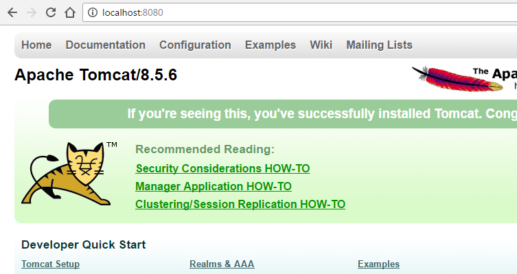
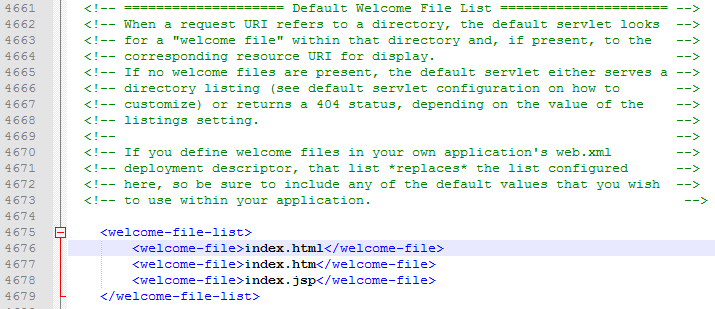

Lab - Test Apache Tomcat
- 20 minutes
- Hello World HTML file
- Welcome File
- Subfolders
- 404 Error
- Hello World JSP file
Start the Web Server
1. Use the command line (cmd on Windows) or terminal (terminal on Mac OSX) to navigate to the ‘bin’ folder in apache\apache-tomcat-8.X.X.
Windows Hint: Use the command cd to change directories, and dir to list what’s in the current directory
2. To start the Apache Tomcat web server, run the startup.bat file (Windows) or sh startup.sh (Mac)
3. Open a web browser and visit http://localhost:8080/
You should see a web page that looks like the following:

Find the Welcome File
4. Navigate to the apache\apache-tomcat-8\webapps\ROOT folder.
This is the base directory of hosted web files on Apache Tomcat. Any web page hosted by this server will need to live somewhere inside this ROOT folder.
On most web servers, the default file that is returned when visiting a server’s address (http://localhost:8080/) is named something like ‘index’ or ‘default’, and it lives in the ROOT folder itself (and not a subfolder).
5. Locate the index file (index.jsp) and open it in a text editor. Scroll up and down and take a look at its contents.
You should see a combination of HTML and Java Scriptlets (code contained inside of <% and %> tags)
Make a new Welcome File
6. Create a new file called index.html that displays the sentence “This web server belongs to me now!” and save it in the ROOT folder.
7. Try visiting http://localhost:8080/ again. What happened?
You should see your index.html page is served now, and not the index.jsp page!
In the configuration file, C:\apache\apache-tomcat-8.X.X\conf\web.xml, there is a setting that specifies which index file gets served when there are more than one. Default Apache Tomcat settings look first for index.html, then index.htm, then index.jsp.

Subfolders and 404s
8. Inside the ROOT folder, make a new folder named ‘test’.
9. Try to visit http://localhost:8080/test . What do you think will happen?
You should have received a “404” error which means a page could not be found. The web server could not locate an index.html, index.htm, or index.jsp file inside the test folder.
10. Try to visit http://localhost:8080/test/fake.html
You should have received a “404” error which means a page could not be found. The web server could not locate a fake.html file inside the test folder.
11. Try to visit http://google.com/fake.html . What happens?
You should have received a “404” error which means a page could not be found. Google’s web server could not locate a fake.html file inside the test folder.
12. Create a new file called index.html that displays the sentence “This is the default file for the test subfolder!”. Save it inside the ROOT/test folder.
13. Try to visit the new web page. What should the web address URL be?
The address should be: http://localhost:8080/test or http://localhost:8080/test/index.html . Try visiting both to see they are the same.
Hello World JSP File
14. Create a new file called index.jsp and place it in the ROOT/test folder.
15. Edit the file so the text contains the following:
<!doctype html>
<html>
<head><title>Hello World JSP!</title>
<body>
This text is written in HTML.<br>
<% out.println("This text is written in <b>Java!</b>"); %>
</body>
</html>
16. Visit http://localhost:8080/test to see your file. Oops! You are probably seeing something that says, “This is the default file…” What do you need to do so that your index.jsp file is the default file for the test folder?
That’s all for this lab, see you in the next unit!